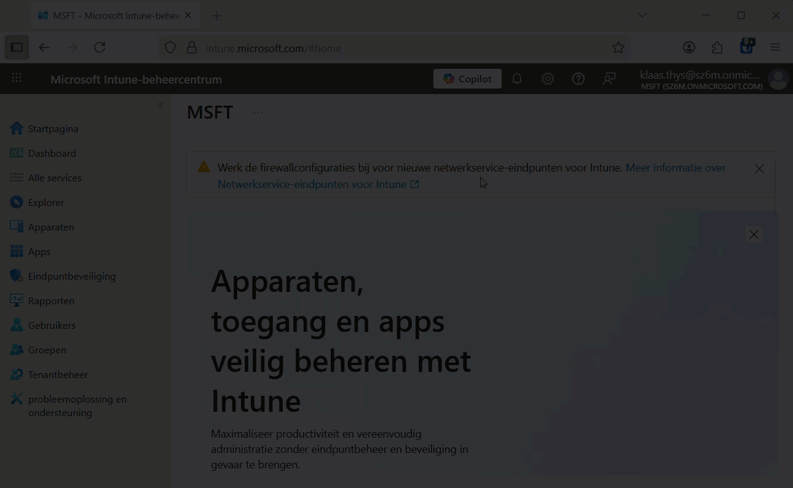
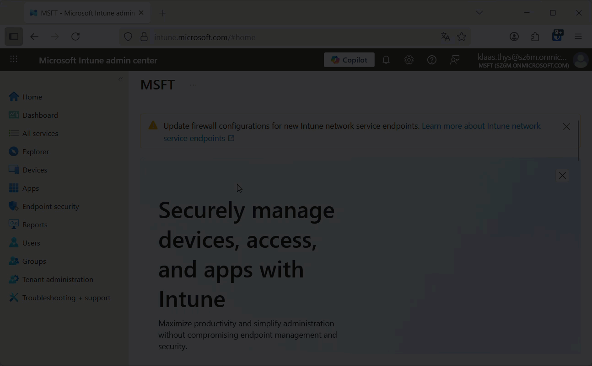
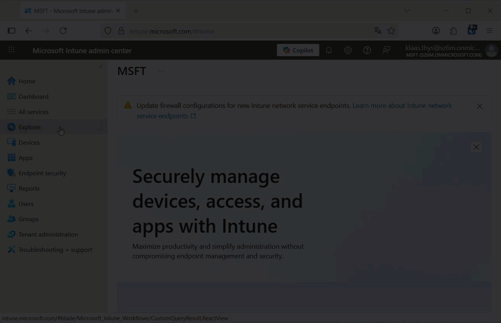
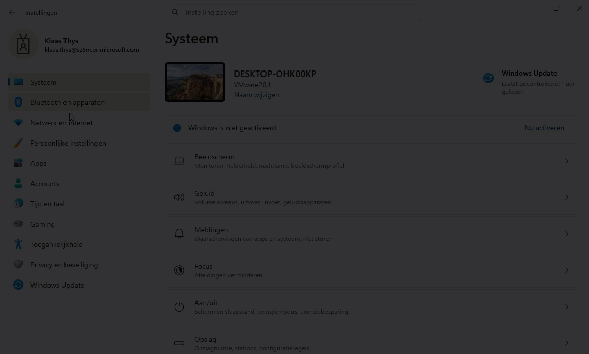
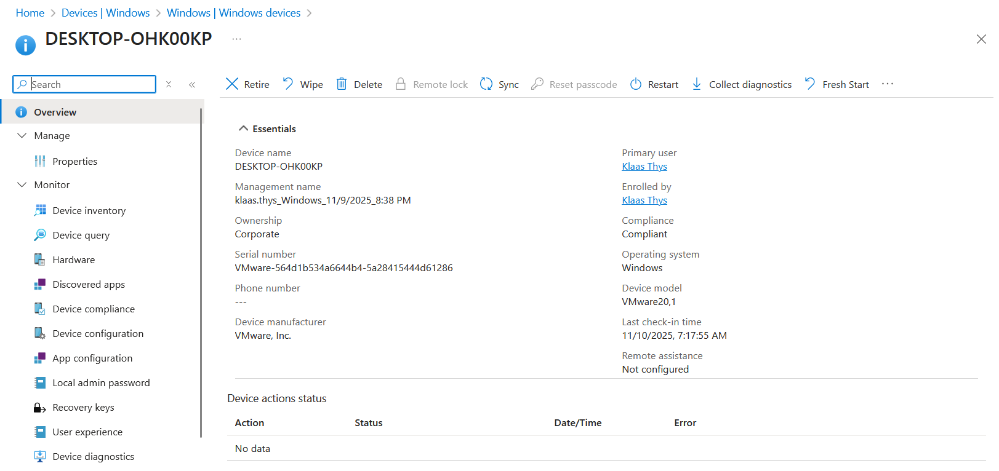
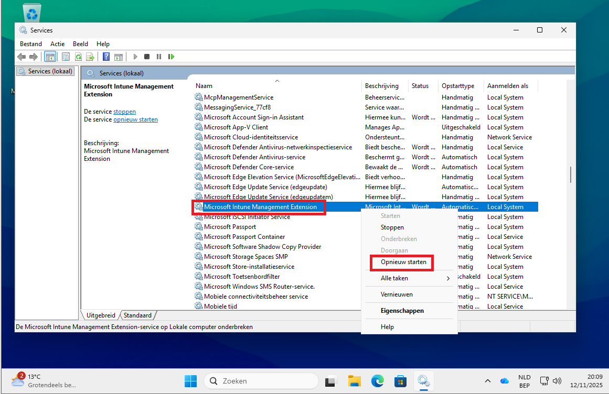
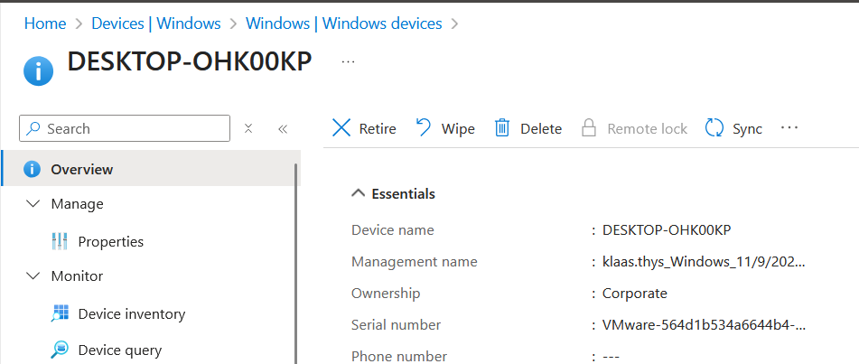

Algemeen
1. Intune-taal
Standaard is de Intune-omgeving ingesteld op het Nederlands. We gebruiken Intune echter in het Engels, omdat de meeste ondersteuningsmiddelen, documentatie en communityforums in het Engels beschikbaar zijn. Zo kan je instructies makkelijker volgen, problemen oplossen en instellingen doorvoeren zonder technische termen naar het Nederlands te moeten vertalen.
De Intune-taal wijzigen naar het Engels
- Ga naar intune.microsoft.com
- Klik rechtsboven op het tandwielicoon.
- Selecteer in het middelste menu Taal en regio (in de Nederlandstalige interface).
- Kies English in de vervolgkeuzelijst voor taal.
- Klik op Toepassen.
Vanaf nu wordt de volledige Intune-omgeving in het Engels weergegeven.

2. MDM-instellingen
De eerste algemene instelling die we in Intune configureren en die het hele platform beïnvloedt, zijn de MDM-instellingen. In de MDM-instellingen bepalen we of toestellen mogen worden ingeschreven in Intune en welke gebruikersaccounts toestellen mogen registreren in Intune.
- Klik in het linkermenu op Devices.
- Klik in het middelste menu, onder Device onboarding, op Enrollment.
- Klik in de sectie Enrollment options op Automatic enrollment.
- Stel de MDM user scope in op All.
- Klik op Save.

2.1. MDM user scope
- None: er kunnen geen toestellen aan Intune worden toegevoegd
- Some: selecteer de Entra-groepen die toestellen mogen registreren in Intune.
- All: alle Entra-gebruikers mogen toestellen registreren in Intune
2.2. MDM: persoonlijk vs bedrijfseigendom
In Mobile Device Management (MDM) van Intune kan je twee types toestellen inschrijven:
- Personal devices – eigendom van en aangekocht door medewerkers
- Company-owned devices – aangekocht en beheerd door de organisatie
De meeste Microsoft 365-tenants zijn geconfigureerd om Intune-beheer enkel toe te laten voor "company-owned devices".
Waarom?
Persoonlijke toestellen zijn eigendom van de medewerker en kunnen zowel voor persoonlijke als voor werkgerelateerde taken gebruikt worden (zoals toegang tot bedrijfse-mail, bestanden en apps). Omdat het bedrijf deze toestellen niet bezit, is het niet aan te raden ze te beheren door bedrijfsbeleid of -configuraties toe te passen. Daardoor worden persoonlijke toestellen zelden via MDM aan Intune toegevoegd.
Je kan het beheer van persoonlijke toestellen toestaan of blokkeren via Device platform restrictions:
- Klik in het linkermenu op Devices.
- Klik in het middelste menu, onder Device onboarding, op Enrollment.
- Klik in de sectie Enrollment options op Device platform restrictions.
- Klik onder Default restriction op All Users.
- Klik in het middelste menu op Properties.
- Klik naast Platform settings op Edit.
- Scroll naar beneden naar Windows (MDM) en configureer of persoonlijke toestellen toegelaten of geblokkeerd worden.

3. Synchroniseren
Wanneer precies een configuration policy wordt toegepast of een app wordt uitgerold, is niet voorspelbaar. Microsoft publiceert het volgende synchronisatieschema voor Windows: om de 3 minuten gedurende de eerste 15 minuten, daarna om de 15 minuten gedurende de volgende 2 uur en daarna ongeveer om de 8 uur.
Microsoft Learn: Device Profile Troubleshoot
Je kan een synchronisatie ook handmatig starten op drie manieren:
- Vanaf het Windows-toestel
- Vanuit Intune
- De Microsoft Intune Management Extension herstarten
3.1. Synchroniseren vanuit Windows
Volg deze stappen om je Windows-toestel handmatig met Intune te synchroniseren:
- Open Windows Settings.
- Selecteer Accounts in het menu.
- Klik op Access work or school (in een Nederlandstalige Windows: "Toegang tot werk of school").
- Vouw de verbinding open door op de pijl naast Connected to ... te klikken (in een Nederlandstalige Windows: "Verbonden met ...").
- Klik op de knop Info.
- Klik op de knop Sync.

Onderaan de pagina zie je ook wanneer het toestel voor het laatst met de Intune-omgeving heeft gesynchroniseerd.
3.2. Synchroniseren vanuit Intune
Je kan een specifiek Windows-toestel ook synchroniseren vanuit het Intune admin center zelf. Navigeer naar het Windows-toestel dat je wil synchroniseren en klik op de knop "Sync".

3.3. Microsoft Intune Management Extension
Het nadeel van een toestel handmatig synchroniseren vanuit het Intune-menu of vanuit de Windows-instellingen is dat het toestel in een wachtrij wordt geplaatst voordat de synchronisatie wordt uitgevoerd.
Om onmiddellijk met de Intune-omgeving te synchroniseren, herstart je handmatig de service Microsoft Intune Management Extension. Deze service wordt automatisch geïnstalleerd op Windows-toestellen wanneer ze in Intune worden ingeschreven.

De Microsoft Intune Management Extension wordt pas geïnstalleerd nadat je een applicatie op je virtuele Windows-machine hebt uitgerold. Meer info op https://learn.microsoft.com/en-us/intune/intune-service/apps/intune-management-extension
4. Opties om een toestel te resetten
Je kan toestellen op verschillende manieren resetten via Intune.

4.1. Retire
- Verwijdert: instellingen, apps en bedrijfsgegevens. Het toestel wordt uit Intune verwijderd.
- Behoudt: persoonlijke gegevens en gebruikersbestanden.
- Scenario: een medewerker verlaat het bedrijf, maar mag het toestel houden. Het toestel wordt buiten gebruik gesteld, maar de medewerker behoudt het.
4.2. Wipe
- Verwijdert: alle gegevens en instellingen, inclusief persoonlijke en bedrijfsgegevens. Het toestel wordt teruggezet naar de fabrieksinstellingen.
- Behoudt: het toestel blijft ingeschreven in Intune.
- Scenario: het toestel wordt opnieuw toegewezen aan een andere medewerker binnen de organisatie, of het is verloren of gestolen.
4.3. Delete
- Verwijdert: het toestel wordt uitgeschreven uit Intune.
- Behoudt: alle instellingen, gegevens en applicaties blijven op het toestel.
- Scenario: het toestel wordt niet langer door de organisatie beheerd, maar alle bestaande gegevens mogen op het toestel blijven. "Delete" stopt enkel het Intune-beheer; het wist het toestel niet.